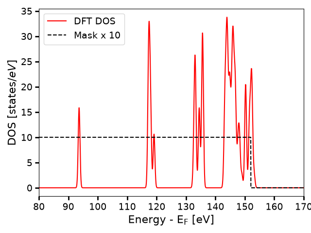
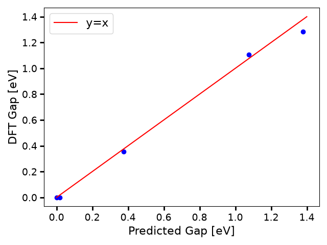
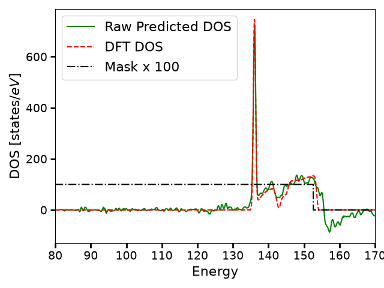

Note
Go to the end to download the full example code.
A Guide to PET-MAD-DOS: Model Inference and Fine-Tuning¶
- Authors:
How Wei Bin @HowWeiBin
PET-MAD-DOS is a universal model of the electronic density of states (DOS) [How et al., Digital Discovery, 2026], that is trained on the MAD dataset of materials and molecules [Mazitov et al., Sci. Data, 2025 <http://doi.org/10.1038/s41597-025-06109-y]_.
This tutorial describes two ways in which one can use PET-MAD-DOS to predict the electronic density of states of a structure:
1. Treating PET-MAD-DOS as a universal model: using the upet package,
we will obtain high quality DOS predictions out of the box for a structure
of interest.
2. Treating PET-MAD-DOS as a foundation model: we will illustrate
how one can use the metatrain package to fine-tune the PET-MAD-DOS
model for a specific application.
In the process, we will also go through the necessary data processing pipeline, starting from basic DFT outputs.
First, let’s begin by importing the necessary packages and helper functions
# sphinx_gallery_thumbnail_number = 2
import ase
import ase.io
import chemiscope
import matplotlib.pyplot as plt
import numpy as np
import torch
from atomistic_cookbook_utils import download_with_retry, run_command
from upet.calculator import PETMADDOSCalculator
from upet.utils import align_dos
/home/runner/work/atomistic-cookbook/atomistic-cookbook/.nox/pet-mad-dos/lib/python3.12/site-packages/metatomic_ase/_neighbors.py:21: UserWarning: found nvalchemi-toolkit-ops version 0.4.0, this code was only tested with version >=0.3.0,<=0.4.0. If you encounter errors, please update to this version range.
warnings.warn(
Using PET-MAD-DOS out of the box¶
In this section, we are going to treat PET-MAD-DOS as a universal model and use it out-of-the-box to obtain predictions of the DOS for a sample of structures.
Loading Sample Structures and Calculator¶
We start by loading a sample of structures, along with their associated
DOS and mask. These are 5 structures from the dataset used in the
PET-MAD-DOS publication. We also load
the PETMADDOSCalculator from the
upet package, which will be used to
predict the DOS for these structures.
# Load the structures
url = "https://zenodo.org/records/19655792/files/MAD_sample_structures.xyz?download=1"
filename = "MAD_sample_structures.xyz"
download_with_retry(url, filename)
structs = ase.io.read("MAD_sample_structures.xyz", ":")
# Extract the DOS and mask
true_DOS = torch.tensor(np.stack([s.info["DOS"] for s in structs]))
true_mask = torch.tensor(np.stack([s.info["mask"] for s in structs]))
print(f"The shape of true_DOS is: {true_DOS.shape}")
print(f"The shape of true_mask is: {true_mask.shape}")
# Load the calculator
pet_mad_dos_calculator = PETMADDOSCalculator(version="latest", device="cpu")
The shape of true_DOS is: torch.Size([5, 4606])
The shape of true_mask is: torch.Size([5, 4606])
Downloading PET-MAD-DOS model version: 1.0
Warning: You are sending unauthenticated requests to the HF Hub. Please set a HF_TOKEN to enable higher rate limits and faster downloads.
/home/runner/work/atomistic-cookbook/atomistic-cookbook/.nox/pet-mad-dos/lib/python3.12/site-packages/metatrain/utils/io.py:228: UserWarning: trying to upgrade an old model checkpoint with unknown version, this might fail and require manual modifications
warnings.warn(
The true DOS is computed based on eigenvalues obtained from DFT calculations and projected on an energy grid of size 4606. However, due to eigenvalue truncation in the dataset, the DOS is not necessarily well-defined at every point on the energy grid. For instance, if the highest computed eigenvalue of a structure A is at 3eV, the computed DOS would indicate that there are no states past 3 eV. However, that is false and is merely an artifact of eigenvalue truncation. Hence, an additional mask is included for each structure to select the regions where the DOS is well-defined. The DOS is considered well-defined up to 0.9eV below the minimum energy of the highest band in the DFT calculation. Following, we plot an example DOS together with its mask.
i_struct = 1 # index of the structure to visualize
energy_grid = np.arange(true_DOS.shape[1]) * pet_mad_dos_calculator.energy_interval
# Plot DOS of the structure
plt.plot(
energy_grid,
true_DOS[i_struct],
label="DFT DOS",
color="red",
)
# Plot mask for the structure (multiplied by 10 for better visualization)
plt.plot(
energy_grid,
true_mask[i_struct] * 10,
label="Mask x 10",
linestyle="--",
color="black",
)
plt.xlim(80, 170)
plt.tick_params(axis="both", which="major", labelsize=14, width=2, length=6)
plt.xlabel(r"Energy - $\mathrm{E_F}$ [eV]", size=16)
plt.ylabel(r"DOS [$\mathrm{states}/eV$]", size=16)
plt.legend(fontsize=14)
plt.tight_layout()
plt.show()

In this plot, the DOS is aligned such that the Fermi level is at 0eV. DOS values where the mask is 0 should not be considered reliable and should be ignored when comparing against the predicted DOS spectra.
Predicting the Bandgap¶
Additionally, PET-MAD-DOS comes with a CNN bandgap model that predicts the gap of a system based on the predicted DOS. Due to inherent model noise and the high sensitivity of the bandgap to small errors in the DOS, obtaining the bandgap via a CNN model is more robust than deriving it from the predicted DOS.
pred_bandgap = results["bandgap"]
true_bandgap = torch.tensor(np.stack([s.info["gap"] for s in structs]))
print(f"The predicted bandgaps are : {pred_bandgap}")
print(f"The DFT bandgaps are : {(true_bandgap)}")
The predicted bandgaps are : tensor([0.0185, 1.0744, 0.3747, 1.3778, 0.0000])
The DFT bandgaps are : tensor([0.0000, 1.1067, 0.3567, 1.2842, 0.0000], dtype=torch.float64)
The band gaps show good agreement, following we generate a parity plot:
plt.scatter(pred_bandgap, true_bandgap, color="blue")
plt.plot([0, 1.4], [0, 1.4], label="y=x", color="red")
plt.tick_params(axis="both", which="major", labelsize=14, width=2, length=6)
plt.xlabel(r"Predicted Gap [eV]", size=16)
plt.ylabel(r"DFT Gap [eV]", size=16)
plt.legend(fontsize=16)
plt.tight_layout()
plt.show()

Interactive exploration with chemiscope¶
To make it easier to inspect the predictions structure-by-structure, we use
chemiscope to build an interactive viewer that
combines the structures, the scalar bandgaps (reference and predicted) and the
full DOS curves. The DOS is declared as a per-structure property living on a
shared energy axis, which is defined through chemiscope’s parameters
mechanism: each entry in parameters provides the values of an independent
axis that 1D properties (here, the DOS) can be plotted against.
chemiscope.show(
structures=structs,
properties={
"DFT bandgap": {
"target": "structure",
"values": true_bandgap.numpy(),
"units": "eV",
},
"predicted bandgap": {
"target": "structure",
"values": pred_bandgap.numpy(),
"units": "eV",
},
"DFT DOS": {
"target": "structure",
"values": aligned_true_DOS.numpy(),
"parameters": ["energy"],
"units": "states/eV",
},
"predicted DOS": {
"target": "structure",
"values": denoised_DOS.numpy(),
"parameters": ["energy"],
"units": "states/eV",
},
},
parameters={
"energy": {
"values": np.asarray(energy_grid),
"name": "Energy",
"units": "eV",
},
},
settings=chemiscope.quick_settings(
x="DFT bandgap",
y="predicted bandgap",
trajectory=False,
),
)

Finetuning PET-MAD-DOS on specific applications¶
In this section, we are going to treat PET-MAD-DOS as a foundation
model and finetune it on a Gallium Arsenide (GaAs) system. We will first
demonstrate the data processing pipeline starting from DFT outputs, and then
we will show how to use the metatrain package to finetune the model.
Data Pre-processing¶
The following cells will show how to process a dataset containing eigenvalues to obtain the corresponding DOS and mask that can be used for fine-tuning PET-MAD-DOS. We will start by loading some GaAs sample structures containing eigenvalues and k-point weights from zenodo.
url = "https://zenodo.org/records/19655792/files/GaAs_sample_structures.xyz?download=1"
filename = "GaAs_sample_structures.xyz"
download_with_retry(url, filename)
GaAs_sample_structures = ase.io.read("GaAs_sample_structures.xyz", ":")
Then we compute the DOS and mask for each structure using the
compute_DOS_and_mask_from_eigenvalues function in the
PETMADDOSCalculator calculator, which applies Gaussian broadening
on the eigenvalues and projects them onto the energy grid of PET-MAD-DOS
to obtain the DOS, and defines the mask based on the energy range
where the DOS is well-defined.
for struct in GaAs_sample_structures:
dos_i = pet_mad_dos_calculator.dos_from_eigenvalues(
torch.tensor(struct.info["eigvals"]), torch.tensor(struct.info["kweight"])
)
struct.info["DOS"] = dos_i.numpy()
# Store the processed structures as a new XYZ file for fine-tuning
# ase.io.write("GaAs_processed_structures.xyz", GaAs_sample_structures)
The processed structures can be saved as a new XYZ file, which will be the target for fine-tuning, as demonstrated in the commented line in the cell above. However, for this tutorial, we would expand on the processing pipeline if one obtains the processed DOS, either from a custom DFT calculation or from the MaterialsCloud archive. The following cell demonstrates the pipeline on a sample of 5 structures from the GaAs dataset in the MaterialsCloud archive.
for i in ["train", "val", "test"]:
url = (
f"https://zenodo.org/records/19655792/files/"
f"GaAs_sample_{i}_structures.xyz?download=1"
)
filename = f"GaAs_sample_{i}_structures.xyz"
download_with_retry(url, filename)
GaAs_sample_structures = ase.io.read(filename, ":")
for struct in GaAs_sample_structures:
DOS = torch.tensor(struct.info["DOS"])
mask = torch.tensor(struct.info["mask"])
padded_dos = pet_mad_dos_calculator.pad_dos(DOS, mask)
struct.info["trainingDOS"] = padded_dos.numpy()
ase.io.write(f"GaAs_processed_{i}.xyz", GaAs_sample_structures)
Model Loading¶
Now download the PET-MAD-DOS checkpoint and place it in the local directory so that it can be referenced in the metatrain YAML configuration files for fine-tuning.
# Download the checkpoint from Zenodo and copy it to the local directory
url = "https://zenodo.org/records/19655792/files/pet-mad-dos-v1.0.ckpt?download=1"
checkpoint_path = "pet-mad-dos-v1.0.ckpt"
download_with_retry(url, checkpoint_path)
PosixPath('pet-mad-dos-v1.0.ckpt')
Step 3: Fine-tuning the model¶
Now we are ready to fine-tune the model using the metatrain package. We
will use the mtt train command to train the model, alongside with a
supporting YAML configuration file that specifies the training hyperparameters.
device: cpu
base_precision: 64
seed: 42
architecture:
name: "pet"
training:
batch_size: 1
num_epochs: 10
learning_rate: 1e-4
atomic_baseline:
mtt::dos: 0.0
scale_targets: false
loss:
mtt::dos:
type: shift_agnostic_mse
weight: 1.0
grad_penalty_weight: 1e-4
int_weight: 2
reduction: mean
finetune:
method: "full"
read_from: pet-mad-dos-v1.0.ckpt
# Section defining the parameters for system and target data
training_set:
systems: GaAs_processed_train.xyz
targets:
mtt::dos:
key: trainingDOS
per_atom: false
type: scalar
num_subtargets: 4806
validation_set:
systems: GaAs_processed_val.xyz
targets:
mtt::dos:
key: trainingDOS
per_atom: false
type: scalar
num_subtargets: 4806
test_set: 0.0
# Begin finetuning
run_command("mtt train finetune.yaml -o fine_tune-model.pt")
CompletedProcess(args=['mtt', 'train', 'finetune.yaml', '-o', 'fine_tune-model.pt'], returncode=0)
Evaluating the model¶
After training, we evaluate the model on the test set using the mtt eval
command, alongside with a supporting YAML configuration file that specifies the
evaluation hyperparameters.
systems:
read_from: ./GaAs_processed_test.xyz
targets:
mtt::dos:
key: trainingDOS
per_atom: false
type: scalar
num_subtargets: 4806
run_command("mtt eval fine_tune-model.pt eval.yaml -o pred.xyz")
output = ase.io.read("pred.xyz", ":")
As we have only fine-tuned for 10 epochs on a tiny dataset, the model performance is not expected to be good. This simply serves as a demonstration of how to use the fine-tuned model.
predicted_DOS = torch.tensor(np.stack([s.info["mtt::dos"] for s in output]))
true_DOS = torch.tensor(np.stack([s.info["DOS"] for s in GaAs_sample_structures]))
true_mask = torch.tensor(np.stack([s.info["mask"] for s in GaAs_sample_structures]))
predicted_DOS, aligned_true_DOS, aligned_true_masks = align_dos(
predicted_DOS, true_DOS, true_mask
)
# Visualize the predictions and the true DOS on the same plot
i_struct = 0 # index of the structure to visualize
energy_grid = np.arange(predicted_DOS.shape[1]) * pet_mad_dos_calculator.energy_interval
plt.plot(energy_grid, predicted_DOS[i_struct], label="Raw Predicted DOS", color="green")
plt.plot(
energy_grid,
aligned_true_DOS[i_struct],
label="DFT DOS",
linestyle="--",
color="red",
)
plt.plot(
energy_grid,
aligned_true_masks[i_struct] * 100,
label="Mask x 100",
linestyle="-.",
color="black",
)
plt.xlim(80, 170)
plt.tick_params(axis="both", which="major", labelsize=14, width=2, length=6)
plt.xlabel(r"Energy", size=16)
plt.ylabel(r"DOS [$\mathrm{states}/eV$]", size=16)
plt.legend(fontsize=16)
plt.tight_layout()
plt.show()

Total running time of the script: (4 minutes 46.673 seconds)